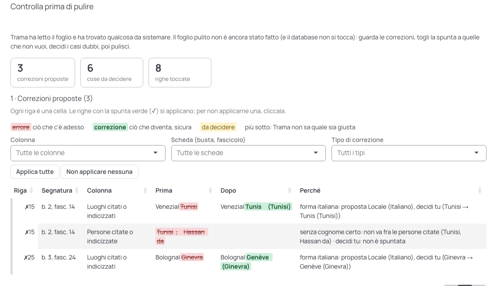

Pulisce i fogli d’inventario e ti mostra ogni cambiamento prima di scriverlo.
Porta i fogli Excel in un modello a 28 colonne. Corregge ciò che è certo; il resto lo decidi tu.
Otto strati in ordine fisso, poi il controllo.
Lettura
Intestazioni, righe senza identificativo, numeri.
Carattere
Unicode, spazi, apostrofi.
Celle con più valori
Separatori giusti, ordine mai toccato.
Forma del valore
Maiuscole, particelle, forma di enti e luoghi.
Vocabolario
Valori noti e refusi.
Coerenza fra colonne
Lo stesso nome scritto in due modi: decidi tu.
Coerenza di riga
Date e numeri in sequenza. Solo segnalazioni.
Composizione
Titolo e regesto dai campi; quelli scritti a mano restano.
Controllo
La finestra di revisione, prima di scrivere.
Tre stati per ogni correzione.
- automatica
Si applica da sola. Nella revisione è già spuntata e puoi toglierla.
Spazi doppi, apostrofo.
- proposta
La decidi tu. Non viene scritta senza il tuo sì.
Due nomi: stessa persona o omonimi?
- intoccabile
Si controlla solo la forma.
Testo libero, regesti, titoli in latino.
Prima di scrivere, vedi che cosa cambia.
Le correzioni sicure sono già spuntate, quelle da decidere no. Per ognuna c’è «Lascia com’è».

Quello che non fa.
- Non stabilisce chi sia «Paolo Rossi»: te lo chiede.
- Non corregge il testo libero.
- Non sostituisce il sistema di descrizione: prepara i dati che ci entreranno.
Gira sul tuo computer, senza rete.
- Mac
- Serve R. Doppio clic su avvia.command.
- Windows
- Serve R 4.6. Si installa da uno zip con le librerie incluse. Provato in una macchina virtuale.
- I tuoi dati
- Nella cartella Trama Lite dentro Documenti: database e copie di sicurezza.
- Esportazioni
- Un fondo alla volta, in xlsx, CSV, JSON, SQL o SQLite.
Per provarlo c’è un fondo inventato. Il codice è sotto licenza MIT; il repository è ancora privato.